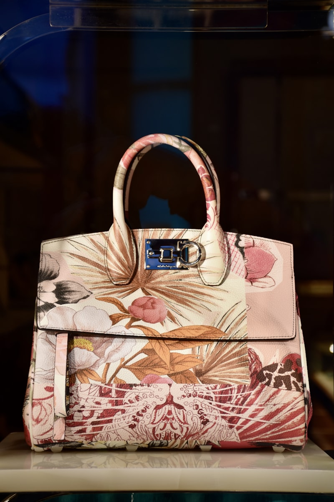
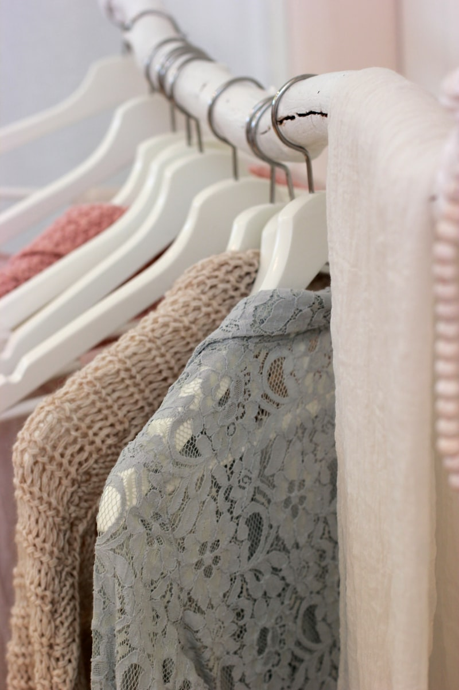

The Art of Styling Luxury Handbags for Editorial Looks
How to pair custom silhouettes, gold hardware, and calfskin textures with modern couture fashion.
Read Journal →
Sustainable Leather Sourcing: Sourcing Raw Hides Ethically
Understanding organic vegetable tanning and pasture cooperatives in the modern luxury leather market.
Read Journal →
How to Care for Fine Grain Leather and Custom Patina
Atelier instructions on leather preservation, natural oils, organic beeswax coatings, and scratch restoration.
Read Journal →
The Evolution of the Iconic Tote Bag in Daily Worklife
From structured utilitarian luggage to high-end carrying silhouettes for executive leaders.
Read Journal →Minimalist Travel Packing with Designer Duffles
Maximizing space and managing weight during cross-border travel using high-capacity luxury trunks.
Read Journal →
Gold-Plated Hardware in Custom Handbag Manufacturing
An analysis of custom casting brass lock systems and triple plating processes for structural longevity.
Read Journal →Choosing the Perfect Workplace Shoulder Bag
A balance of ergonomics, secure pockets, and gold hardware detailing for modern corporate environments.
Read Journal →The History of Luxury Carrying Gear and Trunks
Tracing leather bags from the 19th-century royal travel trunks to modern high-fashion runway clutches.
Read Journal →
Bespoke Leather Craftsmanship Techniques Explained
Unveiling the saddle stitch, skiving blades, beeswax edge finishing, and pattern layout.
Read Journal →
Handbag Design Trends for the Upcoming Fashion Seasons
An analysis of emerging structural bag shapes, organic earth colors, and modular strap designs.
Read Journal →Investing in Luxury Bags: A Financial and Heritage Perspective
Why classic, hand-stitched leather bags appreciate in value and serve as key investment portfolios.
Read Journal →
The Anatomy of a Premium Designer Handbag
Deconstructing gussets, internal zip compartments, double-stitch loops, and golden lock snaps.
Read Journal →